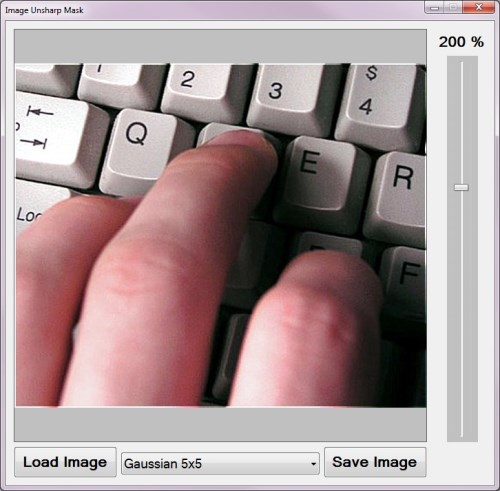

The purpose of this article is to explore and illustrate the concept of Image Unsharp Masking. This article implements image convolution in the form of a 3×3 Gaussian Blur, 5×5 Gaussian Blur, 3×3 Mean filter and a 5×5 Mean filter.
There are no special requirements or instructions for building the sample source code.
The sample source code associated with this article includes a Windows Forms based sample application implementing the concepts explored throughout this article.
When using the Image Unsharp Mask sample application users can select a source/input image from the local file system by clicking the Load Image button. The dropdown combobox at the bottom of the screen allows the user to select an unsharp masking variation. On the right hand side of the screen users can specify the level/intensity of resulting image sharpness.
Clicking the Save Image button allows a user to save resulting images to the local file system. The image below is a screenshot of the Image Unsharp Mask sample application in action:

A good definition of Image Unsharp Masking can be found on Wikipedia:
Unsharp masking (USM) is an image manipulation technique, often available in digital image processing software.
The "unsharp" of the name derives from the fact that the technique uses a blurred, or "unsharp", positive image to create a "mask" of the original image. The unsharped mask is then combined with the negative image, creating an image that is less blurry than the original. The resulting image, although clearer, probably loses accuracy with respect to the image’s subject. In the context of signal-processing, an unsharp mask is generally a linear or nonlinear filter that amplifies high-frequency components.
In this article we implement Image Unsharp Masking by first creating a blurred copy of a source/input image then subtracting the blurred image from the original image, which is known as the mask. Increased image sharpness is achieved by adding a factor of the mask to the original image.
The sample source code provides the definition for the ConvolutionFilter extension method targeting the Bitmap class. This method is invoked when implementing image blurring. The definition of the ConvolutionFilter extension method as follows:
private static Bitmap ConvolutionFilter(Bitmap sourceBitmap,
double[,] filterMatrix,
double factor = 1,
int bias = 0,
bool grayscale = false )
{
BitmapData sourceData = sourceBitmap.LockBits(new Rectangle (0, 0,
sourceBitmap.Width, sourceBitmap.Height),
ImageLockMode.ReadOnly,
PixelFormat.Format32bppArgb);
byte[] pixelBuffer = new byte[sourceData.Stride * sourceData.Height];
byte[] resultBuffer = new byte[sourceData.Stride * sourceData.Height];
Marshal.Copy(sourceData.Scan0, pixelBuffer, 0, pixelBuffer.Length);
sourceBitmap.UnlockBits(sourceData);
if (grayscale == true)
{
float rgb = 0;
for (int k = 0; k < pixelBuffer.Length; k += 4)
{
rgb = pixelBuffer[k] * 0.11f;
rgb += pixelBuffer[k + 1] * 0.59f;
rgb += pixelBuffer[k + 2] * 0.3f;
pixelBuffer[k] = (byte )rgb;
pixelBuffer[k + 1] = pixelBuffer[k];
pixelBuffer[k + 2] = pixelBuffer[k];
pixelBuffer[k + 3] = 255;
}
}
double blue = 0.0;
double green = 0.0;
double red = 0.0;
int filterWidth = filterMatrix.GetLength(1);
int filterHeight = filterMatrix.GetLength(0);
int filterOffset = (filterWidth-1) / 2;
int calcOffset = 0;
int byteOffset = 0;
for (int offsetY = filterOffset; offsetY <
sourceBitmap.Height - filterOffset; offsetY++)
{
for (int offsetX = filterOffset; offsetX <
sourceBitmap.Width - filterOffset; offsetX++)
{
blue = 0;
green = 0;
red = 0;
byteOffset = offsetY *
sourceData.Stride +
offsetX * 4;
for (int filterY = -filterOffset;
filterY <= filterOffset; filterY++)
{
for (int filterX = -filterOffset;
filterX <= filterOffset; filterX++)
{
calcOffset = byteOffset +
(filterX * 4) +
(filterY * sourceData.Stride);
blue += (double)(pixelBuffer[calcOffset]) *
filterMatrix[filterY + filterOffset,
filterX + filterOffset];
green += (double)(pixelBuffer[calcOffset + 1]) *
filterMatrix[filterY + filterOffset,
filterX + filterOffset];
red += (double)(pixelBuffer[calcOffset + 2]) *
filterMatrix[filterY + filterOffset,
filterX + filterOffset];
}
}
blue = factor * blue + bias;
green = factor * green + bias;
red = factor * red + bias;
if (blue > 255)
{ blue = 255; }
else if (blue < 0)
{ blue = 0; }
if (green > 255)
{ green = 255; }
else if (green < 0)
{ green = 0; }
if (red > 255)
{ red = 255; }
else if (red < 0)
{ red = 0; }
resultBuffer[byteOffset] = (byte )(blue);
resultBuffer[byteOffset + 1] = (byte )(green);
resultBuffer[byteOffset + 2] = (byte )(red);
resultBuffer[byteOffset + 3] = 255;
}
}
Bitmap resultBitmap = new Bitmap(sourceBitmap.Width,
sourceBitmap.Height);
BitmapData resultData = resultBitmap.LockBits(new Rectangle (0, 0,
resultBitmap.Width, resultBitmap.Height),
ImageLockMode.WriteOnly,
PixelFormat.Format32bppArgb);
Marshal.Copy(resultBuffer, 0, resultData.Scan0, resultBuffer.Length);
resultBitmap.UnlockBits(resultData);
return resultBitmap;
}
private static Bitmap ConvolutionFilter(Bitmap sourceBitmap, double[,] filterMatrix, double factor = 1, int bias = 0, bool grayscale = false ) { BitmapData sourceData = sourceBitmap.LockBits(new Rectangle (0, 0, sourceBitmap.Width, sourceBitmap.Height), ImageLockMode.ReadOnly, PixelFormat.Format32bppArgb); byte[] pixelBuffer = new byte[sourceData.Stride * sourceData.Height]; byte[] resultBuffer = new byte[sourceData.Stride * sourceData.Height]; Marshal.Copy(sourceData.Scan0, pixelBuffer, 0, pixelBuffer.Length); sourceBitmap.UnlockBits(sourceData); if (grayscale == true) { float rgb = 0; for (int k = 0; k < pixelBuffer.Length; k += 4) { rgb = pixelBuffer[k] * 0.11f; rgb += pixelBuffer[k + 1] * 0.59f; rgb += pixelBuffer[k + 2] * 0.3f; pixelBuffer[k] = (byte )rgb; pixelBuffer[k + 1] = pixelBuffer[k]; pixelBuffer[k + 2] = pixelBuffer[k]; pixelBuffer[k + 3] = 255; } } double blue = 0.0; double green = 0.0; double red = 0.0; int filterWidth = filterMatrix.GetLength(1); int filterHeight = filterMatrix.GetLength(0); int filterOffset = (filterWidth-1) / 2; int calcOffset = 0; int byteOffset = 0; for (int offsetY = filterOffset; offsetY < sourceBitmap.Height - filterOffset; offsetY++) { for (int offsetX = filterOffset; offsetX < sourceBitmap.Width - filterOffset; offsetX++) { blue = 0; green = 0; red = 0; byteOffset = offsetY * sourceData.Stride + offsetX * 4; for (int filterY = -filterOffset; filterY <= filterOffset; filterY++) { for (int filterX = -filterOffset; filterX <= filterOffset; filterX++) { calcOffset = byteOffset + (filterX * 4) + (filterY * sourceData.Stride); blue += (double)(pixelBuffer[calcOffset]) * filterMatrix[filterY + filterOffset, filterX + filterOffset]; green += (double)(pixelBuffer[calcOffset + 1]) * filterMatrix[filterY + filterOffset, filterX + filterOffset]; red += (double)(pixelBuffer[calcOffset + 2]) * filterMatrix[filterY + filterOffset, filterX + filterOffset]; } } blue = factor * blue + bias; green = factor * green + bias; red = factor * red + bias; if (blue > 255) { blue = 255; } else if (blue < 0) { blue = 0; } if (green > 255) { green = 255; } else if (green < 0) { green = 0; } if (red > 255) { red = 255; } else if (red < 0) { red = 0; } resultBuffer[byteOffset] = (byte )(blue); resultBuffer[byteOffset + 1] = (byte )(green); resultBuffer[byteOffset + 2] = (byte )(red); resultBuffer[byteOffset + 3] = 255; } } Bitmap resultBitmap = new Bitmap(sourceBitmap.Width, sourceBitmap.Height); BitmapData resultData = resultBitmap.LockBits(new Rectangle (0, 0, resultBitmap.Width, resultBitmap.Height), ImageLockMode.WriteOnly, PixelFormat.Format32bppArgb); Marshal.Copy(resultBuffer, 0, resultData.Scan0, resultBuffer.Length); resultBitmap.UnlockBits(resultData); return resultBitmap; }
An important step required when implementing Image Unsharp Masking comes in the form of creating a mask by subtracting a blurred copy from the original image and then adding a factor of the mask to the original image. In order to achieve increased performance the sample source code combines the process of creating the mask and adding the mask to the original image.
The SubtractAddFactorImage extension method iterates every pixel that forms part of an image. In a single step the blurred pixel is subtracted from the original pixel, multiplied by a user specified factor and then added to the original pixel. The definition of the SubtractAddFactorImage extension method as follows:
private static Bitmap SubtractAddFactorImage(
this Bitmap subtractFrom,
Bitmap subtractValue,
float factor = 1.0f)
{
BitmapData sourceData =
subtractFrom.LockBits(new Rectangle (0, 0,
subtractFrom.Width, subtractFrom.Height),
ImageLockMode.ReadOnly,
PixelFormat.Format32bppArgb);
byte[] sourceBuffer = new byte[sourceData.Stride *
sourceData.Height];
Marshal.Copy(sourceData.Scan0, sourceBuffer, 0,
sourceBuffer.Length);
byte[] resultBuffer = new byte[sourceData.Stride *
sourceData.Height];
BitmapData subtractData =
subtractValue.LockBits(new Rectangle (0, 0,
subtractValue.Width, subtractValue.Height),
ImageLockMode.ReadOnly,
PixelFormat.Format32bppArgb);
byte[] subtractBuffer = new byte[subtractData.Stride *
subtractData.Height];
Marshal.Copy(subtractData.Scan0, subtractBuffer, 0,
subtractBuffer.Length);
subtractFrom.UnlockBits(sourceData);
subtractValue.UnlockBits(subtractData);
double blue = 0;
double green = 0;
double red = 0;
for (int k = 0; k < resultBuffer.Length &&
k < subtractBuffer.Length; k += 4)
{
blue = sourceBuffer[k] +
(sourceBuffer[k] -
subtractBuffer[k]) * factor;
green = sourceBuffer[k + 1] +
(sourceBuffer[k + 1] -
subtractBuffer[k + 1]) * factor;
red = sourceBuffer[k + 2] +
(sourceBuffer[k + 2] -
subtractBuffer[k + 2]) * factor;
blue = (blue < 0 ? 0 : (blue > 255 ? 255 : blue));
green = (green < 0 ? 0 : (green > 255 ? 255 : green));
red = (red < 0 ? 0 : (red > 255 ? 255 : red));
resultBuffer[k] = (byte )blue;
resultBuffer[k + 1] = (byte )green;
resultBuffer[k + 2] = (byte )red;
resultBuffer[k + 3] = 255;
}
Bitmap resultBitmap = new Bitmap (subtractFrom.Width,
subtractFrom.Height);
BitmapData resultData =
resultBitmap.LockBits(new Rectangle (0, 0,
resultBitmap.Width, resultBitmap.Height),
ImageLockMode.WriteOnly,
PixelFormat.Format32bppArgb);
Marshal.Copy(resultBuffer, 0, resultData.Scan0,
resultBuffer.Length);
resultBitmap.UnlockBits(resultData);
return resultBitmap;
}
private static Bitmap SubtractAddFactorImage( this Bitmap subtractFrom, Bitmap subtractValue, float factor = 1.0f) { BitmapData sourceData = subtractFrom.LockBits(new Rectangle (0, 0, subtractFrom.Width, subtractFrom.Height), ImageLockMode.ReadOnly, PixelFormat.Format32bppArgb); byte[] sourceBuffer = new byte[sourceData.Stride * sourceData.Height]; Marshal.Copy(sourceData.Scan0, sourceBuffer, 0, sourceBuffer.Length); byte[] resultBuffer = new byte[sourceData.Stride * sourceData.Height]; BitmapData subtractData = subtractValue.LockBits(new Rectangle (0, 0, subtractValue.Width, subtractValue.Height), ImageLockMode.ReadOnly, PixelFormat.Format32bppArgb); byte[] subtractBuffer = new byte[subtractData.Stride * subtractData.Height]; Marshal.Copy(subtractData.Scan0, subtractBuffer, 0, subtractBuffer.Length); subtractFrom.UnlockBits(sourceData); subtractValue.UnlockBits(subtractData); double blue = 0; double green = 0; double red = 0; for (int k = 0; k < resultBuffer.Length && k < subtractBuffer.Length; k += 4) { blue = sourceBuffer[k] + (sourceBuffer[k] - subtractBuffer[k]) * factor; green = sourceBuffer[k + 1] + (sourceBuffer[k + 1] - subtractBuffer[k + 1]) * factor; red = sourceBuffer[k + 2] + (sourceBuffer[k + 2] - subtractBuffer[k + 2]) * factor; blue = (blue < 0 ? 0 : (blue > 255 ? 255 : blue)); green = (green < 0 ? 0 : (green > 255 ? 255 : green)); red = (red < 0 ? 0 : (red > 255 ? 255 : red)); resultBuffer[k] = (byte )blue; resultBuffer[k + 1] = (byte )green; resultBuffer[k + 2] = (byte )red; resultBuffer[k + 3] = 255; } Bitmap resultBitmap = new Bitmap (subtractFrom.Width, subtractFrom.Height); BitmapData resultData = resultBitmap.LockBits(new Rectangle (0, 0, resultBitmap.Width, resultBitmap.Height), ImageLockMode.WriteOnly, PixelFormat.Format32bppArgb); Marshal.Copy(resultBuffer, 0, resultData.Scan0, resultBuffer.Length); resultBitmap.UnlockBits(resultData); return resultBitmap; }
The image blurring convolution filters implemented by the sample source code relies on static matrix/kernel values defined in the Matrix class. The variants of blurring implemented are: 3×3 Gaussian, 5×5 Gaussian, 3×3 Mean and 5×5 Mean. The definition of the Matrix class is detailed by the following code snippet:
public static class Matrix
{
public static double[,] Gaussian3x3
{
get
{
return new double[,]
{ { 1, 2, 1, },
{ 2, 4, 2, },
{ 1, 2, 1, }, };
}
}
public static double[,] Gaussian5x5Type1
{
get
{
return new double[,]
{ { 2, 04, 05, 04, 2 },
{ 4, 09, 12, 09, 4 },
{ 5, 12, 15, 12, 5 },
{ 4, 09, 12, 09, 4 },
{ 2, 04, 05, 04, 2 }, };
}
}
public static double[,] Mean3x3
{
get
{
return new double[,]
{ { 1, 1, 1, },
{ 1, 1, 1, },
{ 1, 1, 1, }, };
}
}
public static double[,] Mean5x5
{
get
{
return new double[,]
{ { 1, 1, 1, 1, 1 },
{ 1, 1, 1, 1, 1 },
{ 1, 1, 1, 1, 1 },
{ 1, 1, 1, 1, 1 },
{ 1, 1, 1, 1, 1 }, };
}
}
}
public static class Matrix { public static double[,] Gaussian3x3 { get { return new double[,] { { 1, 2, 1, }, { 2, 4, 2, }, { 1, 2, 1, }, }; } } public static double[,] Gaussian5x5Type1 { get { return new double[,] { { 2, 04, 05, 04, 2 }, { 4, 09, 12, 09, 4 }, { 5, 12, 15, 12, 5 }, { 4, 09, 12, 09, 4 }, { 2, 04, 05, 04, 2 }, }; } } public static double[,] Mean3x3 { get { return new double[,] { { 1, 1, 1, }, { 1, 1, 1, }, { 1, 1, 1, }, }; } } public static double[,] Mean5x5 { get { return new double[,] { { 1, 1, 1, 1, 1 }, { 1, 1, 1, 1, 1 }, { 1, 1, 1, 1, 1 }, { 1, 1, 1, 1, 1 }, { 1, 1, 1, 1, 1 }, }; } } }
This article explores four variants of Image Unsharp Masking, relating to the four types of image blurring discussed in the previous section. The sample source code defines the following Image Unsharp Masking extension methods: UnsharpGaussian3x3, UnsharpGaussian5x5, UnsharpMean3x3 and UnsharpMean5x5. All four methods are defined as extension methods targeting the Bitmap class. When looking at the sample images in the following section you will notice the correlation between increased image blurring and enhanced image sharpness. The definition as follows:
public static Bitmap UnsharpGaussian3x3(
this Bitmap sourceBitmap,
float factor = 1.0f)
{
Bitmap blurBitmap = ExtBitmap.ConvolutionFilter(
sourceBitmap,
Matrix.Gaussian3x3,
1.0 / 16.0);
Bitmap resultBitmap =
sourceBitmap.SubtractAddFactorImage(
blurBitmap, factor);
return resultBitmap;
}
public static Bitmap UnsharpGaussian5x5(
this Bitmap sourceBitmap,
float factor = 1.0f)
{
Bitmap blurBitmap = ExtBitmap.ConvolutionFilter(
sourceBitmap,
Matrix.Gaussian5x5Type1,
1.0 / 159.0);
Bitmap resultBitmap =
sourceBitmap.SubtractAddFactorImage(
blurBitmap, factor);
return resultBitmap;
}
public static Bitmap UnsharpMean3x3(
this Bitmap sourceBitmap,
float factor = 1.0f)
{
Bitmap blurBitmap = ExtBitmap.ConvolutionFilter(
sourceBitmap,
Matrix.Mean3x3,
1.0 / 9.0);
Bitmap resultBitmap =
sourceBitmap.SubtractAddFactorImage(
blurBitmap, factor);
return resultBitmap;
}
public static Bitmap UnsharpMean5x5(
this Bitmap sourceBitmap,
float factor = 1.0f)
{
Bitmap blurBitmap = ExtBitmap.ConvolutionFilter(
sourceBitmap,
Matrix.Mean5x5,
1.0 / 25.0);
Bitmap resultBitmap =
sourceBitmap.SubtractAddFactorImage(
blurBitmap, factor);
return resultBitmap;
}
public static Bitmap UnsharpGaussian3x3( this Bitmap sourceBitmap, float factor = 1.0f) { Bitmap blurBitmap = ExtBitmap.ConvolutionFilter( sourceBitmap, Matrix.Gaussian3x3, 1.0 / 16.0); Bitmap resultBitmap = sourceBitmap.SubtractAddFactorImage( blurBitmap, factor); return resultBitmap; } public static Bitmap UnsharpGaussian5x5( this Bitmap sourceBitmap, float factor = 1.0f) { Bitmap blurBitmap = ExtBitmap.ConvolutionFilter( sourceBitmap, Matrix.Gaussian5x5Type1, 1.0 / 159.0); Bitmap resultBitmap = sourceBitmap.SubtractAddFactorImage( blurBitmap, factor); return resultBitmap; } public static Bitmap UnsharpMean3x3( this Bitmap sourceBitmap, float factor = 1.0f) { Bitmap blurBitmap = ExtBitmap.ConvolutionFilter( sourceBitmap, Matrix.Mean3x3, 1.0 / 9.0); Bitmap resultBitmap = sourceBitmap.SubtractAddFactorImage( blurBitmap, factor); return resultBitmap; } public static Bitmap UnsharpMean5x5( this Bitmap sourceBitmap, float factor = 1.0f) { Bitmap blurBitmap = ExtBitmap.ConvolutionFilter( sourceBitmap, Matrix.Mean5x5, 1.0 / 25.0); Bitmap resultBitmap = sourceBitmap.SubtractAddFactorImage( blurBitmap, factor); return resultBitmap; }
The input/source image used in rendering the sample images shown in this article is licensed under the Creative Commons Attribution-Share Alike 3.0 Unported license and can be downloaded from Wikipedia:
The Original Image
Unsharp Gaussian 3×3
Unsharp Gaussian 5×5
Unsharp Mean 3×3
Unsharp Gaussian 5×5
This article is based on an article originally posted on my blog: http://softwarebydefault.com/2013/05/18/image-unsharp-mask/ If you have any questions/comments please feel free to make use of the Q&A section on this page, also please remember to rate this article.
{kind=link}